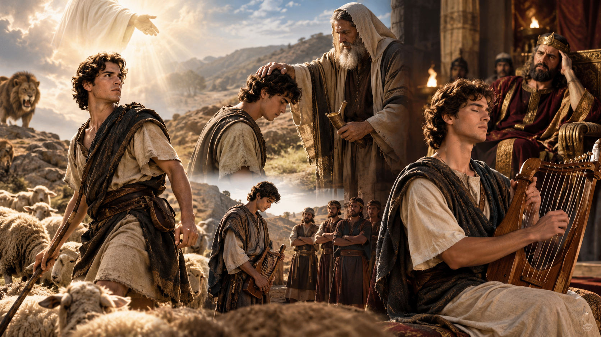

01
Vocación · Fe · Valentía
El Pastor escogido

Contexto
David es el pastor que lucha por sus ovejas con valentía sin importar la fiera que amenace su rebaño. Es menospreciado por su padre y sus hermanos, pero escogido por Dios y ungido por el profeta Samuel. Llamado por el rey Saúl para alejar a través del arpa el espíritu malo que lo atormentaba.
Referencias: 1 Samuel 16:1–23; 17:34–37